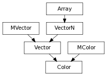

A 4 dimensional vector class that wraps Maya’s api Color class, It stores the r, g, b, a components of the color, as normalized (Python) floats
alias of MColor
c.gamma(g) applies gamma correction g to Color c, g can be a scalar and then will be applied to r, g, b or an iterable of up to 3 (r, g, b) independant gamma correction values
The h Color component
The h,s,v,a Color components
The h,s,v,a Color components
c1.hsvblend(c2) –> Color Returns the result of blending c1 with c2 in hsv space, using the given weight
c1.over(c2): Composites c1 over other c2 using c1’s alpha, the resulting color has the alpha of c2
Premultiply Color r, g and b by it’s alpha and resets alpha to 1.0
The r,g,b Color components
The r,g,b,a Color components
The s Color component
Color component assigment.
| Parameters : |
|
|---|---|
| Return type: | bool |
Derived from api method maya.OpenMaya.MColor.set
The v Color component